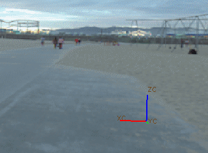

基于图像的打光
基于图像的打光是一种部件渲染技术，使用图像作为光源、反射以及阴影的参考。
-
一般来说用作背景的高动态范围图像将用作基于图像打光的参考
-
选定的图像被映射到包含要渲染部件的球面上
-
这个球面将作为内部光源来照亮部件
这将允许部件上的光源采用指定背景图像中的光源特性。
|

|
基于图像打光的概念
使用基于图像打光的相关命令
 系统场景
系统场景
您从系统场景资源板中应用的任何可视化场景都已经有一张高动态范围图像与之关联。
您可以使用场景编辑器来编辑与创建基于图像打光的组合。
 场景编辑器
场景编辑器
使用场景编辑器中的全局照明选项卡来修改基于图像打光的图像文件，并控制光源强度和饱和度。
可以使用预先定义的包含高动态范围光源环境图像的资源板。